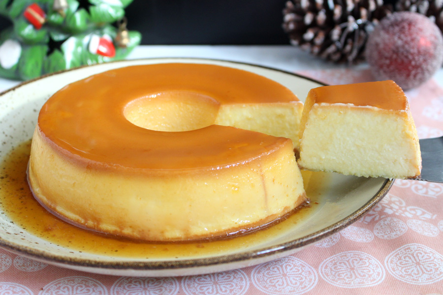

Pudim de Leite em Pó
Ingredientes (12 porções)
- 3 ovos
- 10 colheres (sopa) de açucar
- 16 colheres (sopa) de leite em pó
- 4 xícaras de água
Caramelo
- 2 xícaras de açúcar
- 1 xícara de água
Modo de preparo-10min
- Bata todos os ingredientes no liquidificador e reserve.
- (PARA CALDA)Misture em uma panela o açúcar e a água e leve ao fogo.
- Não volte a mexer até que a calda chegue no ponto de caramelo, desligue o fogo.
- Unte uma forma (com a calda) própria para pudim em microondas.
- Coloque a mistura que foi batida no liquidificador, levando ao forno até dourar.
